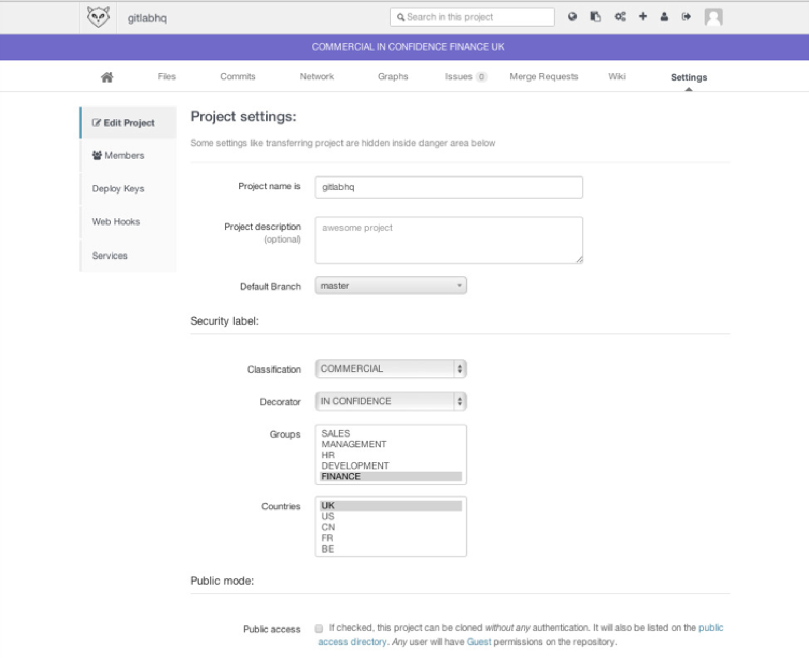
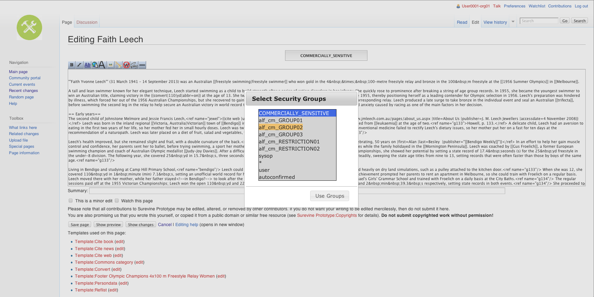

Open Source Solutions
Surevine's Open Source Solutions in the Public Sector
Created by @surevine
Agenda
- Public Social Systems - state of play
- Lightning tour of Surevine Solutions
- In-depth look at three examples
Public Social Systems
Visual Social Media


Snapchat
YouTube

Vimeo

Why?
"A picture tells a thousand words"
Mobile
- Better, cheaper mobile technology
- Increased smartphone user base
- 75% of active Twitter users are on mobile
- Most popular social platform
- Key to success is the ecosystem
- Teen usage is dropping
Google+
- 52% of internet users have accounts
- However, less than half of these are active users
Document Sharing
Dropbox, Google Drive, Box, Microsoft SkyDrive
- Storing and sharing files is simple
- Rich interfaces onto your content
Surevine Solutions/h1>
A lightning tour
- Incident Reporting
- Enterprise Microblogging
- Social Networks & Social Voting
- Source Code Sharing
- Instant Messenger
Incident Reporting
A collaboration platform to connect key security stakeholders throughout the public and private sectors
Users can
- Raise and read incident reports
- Act anonymously if need-be
- Recieve security bulletins relevant to them
- Interact with members of their community
IR - an incident report

IR - an activity feed

Vitis
"Microblogging for the enterprise"
Users share status updates within the enteprise, topics or teams
Federateable, secure, on-premises
Vitis Screenshot
ITF Social Network
- Workflow on RFI / bids
- Social Voting
Gitlab
Securely share source code
Instant Messenger Integration
Supplied an instant-messaging capability to connect a number of UK Govt departments
Integrated the capability with the customers corporate toolset
Example - content management web application
IM Integration Example
In Depth
- Vitis - Enterprise Microblogging
- ITF - Social Network & Social Voting
- MediaWiki with Security Plugins
- Instant Messenger Integration
Vitis in Depth
ITF Social Network in Depth
MediaWiki
Developed for Wikipedia and used by 1000s of others including:
- Intellipedia - US Intelligence Community
- Diplopedia - US Dept of State
- United Nations
- UK Government Departments
Customised by us to apply security markings to wiki pages
Intellipedia

Diplopedia

United Nations - INTSTRAW
This software runs Wikipedia and is therefore guaranteed to be thoroughly tested, will continue to be developed well into the future, and future technicians on these wikis will be more likely to have exposure to MediaWiki than any other wiki software.
Anna Maron & Mikel Maron, 2007: A stealth transform: introducing wikis to the UN
MediaWiki - applying a security marking
MediaWiki - viewing a secured page

Mediawiki extensibility
Over 700 configuration options and 2,000 known extensions
Available extensions include:
- Rich text and media editors
- Security, backup and information management features
- Integration with corporate LDAP, Single-Sign-On etc
- Custom Themes and UIs
- Custom metadata
- ...and many more!
Agenda Recap
- Public Social Systems - state of play
- Lightning tour of Surevine Solutions
- In-depth look at three examples